2026-11-09 补充版。此前更新说明只写了「能玩、欢迎测试」和链接，这里把每款游戏具体怎么玩和真实操作画面补齐。玩法说明来自各工程 README，截图全部是真实 Edge / CDP 渲染，不是示意图。
在线玩 bilibili.com/toy/hashimiao-quiz-avg/index.html · 工程 github.com/604665656/hashimiao-quiz-avg
一间会念题的测试屋：由「眼镜猫」念题，你做选择，最后给一段可以推翻的观察。不是标准心理测评，结果只当聊天起点。内容规模：7 条分类轴 / 48 个取值 / 7 个分区 / 18 套卷（17 套可玩 + 1 套规格说明）/ 174 道题 / 9 种卷型引擎。
AUTO 自动推进、SKIP 跳过、LOG 回看记录。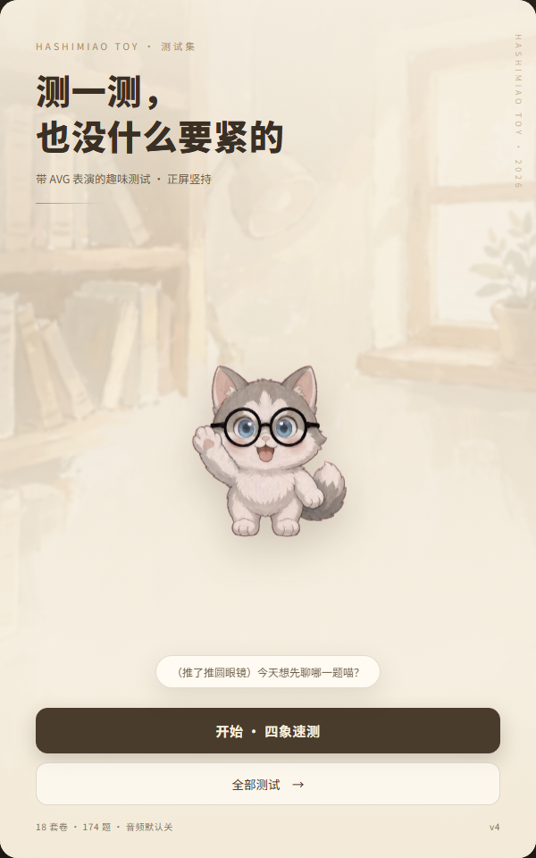
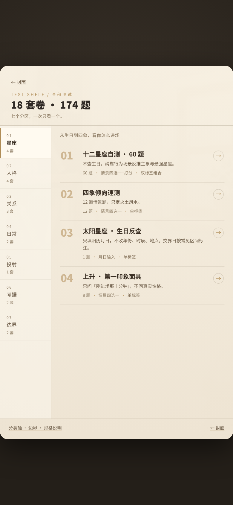
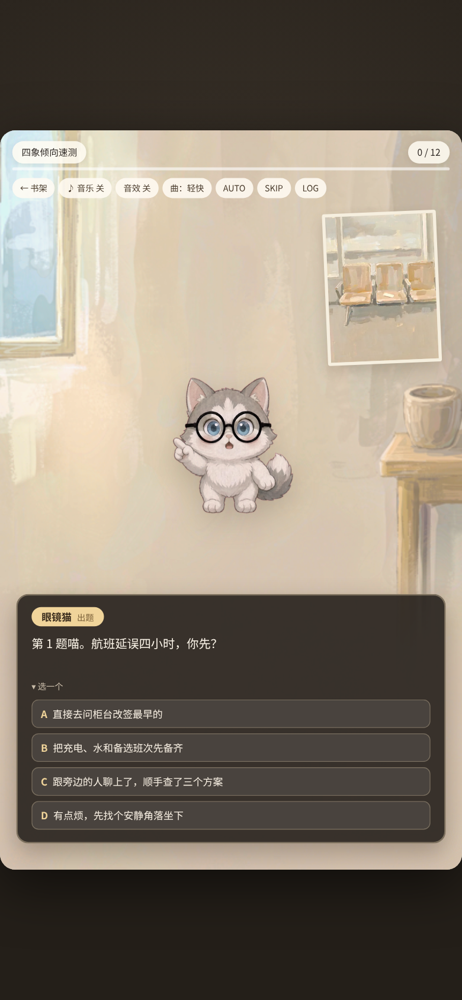
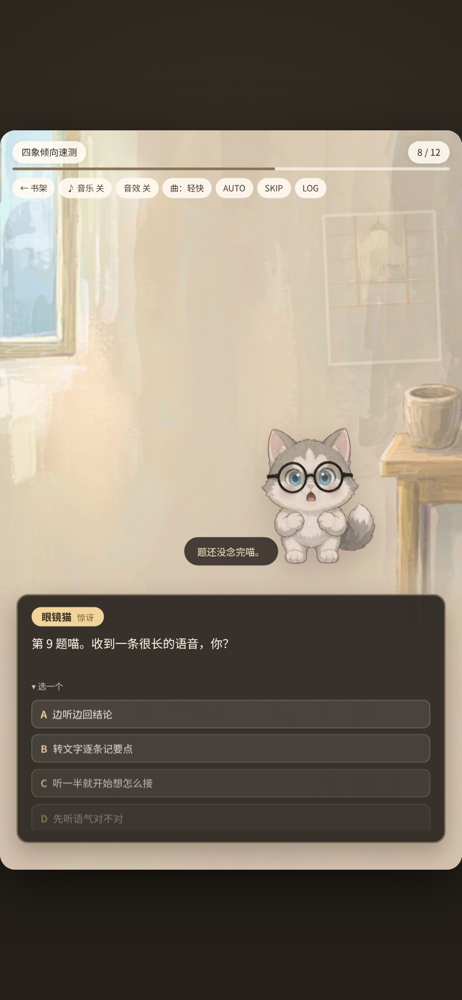
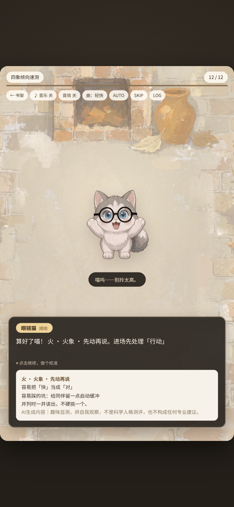
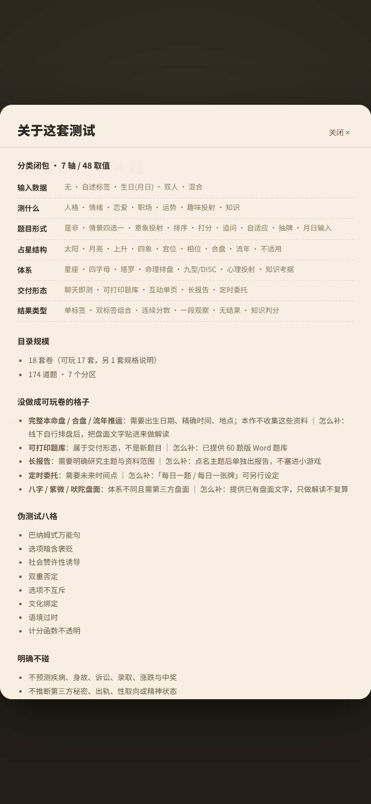
在线玩 bilibili.com/toy/hsm-toaru/index.html · 工程 github.com/604665656/hsm-toaru
非官方同人 AVG，33 关。每关固定三段式：阅读对白 → 回答问题 → 查看解锁词条。答对推进剧情并解锁资料，配关卡地图、资料库与人格测试等附属页签。
⏭ 直接跳到本题选项，不用逐句点完。⛶；另有「自动」「表情」「背景：开」等开关。0 / 33 关卡、6 / 152 词条 进度，资料库与素材展柜随时回看。VERSION v0.65，是上游归档遗留，与本次 v0.81 交付包不一致，不影响游玩；按「不改源文件」原则如实保留。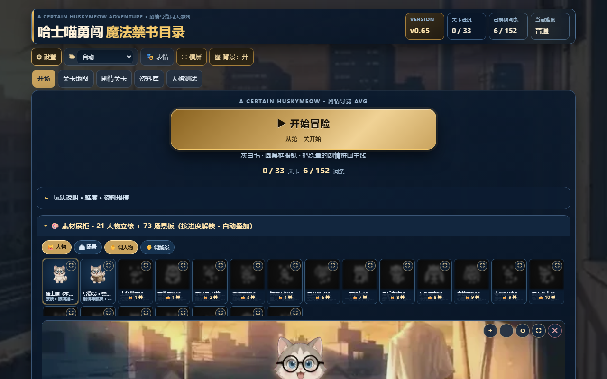
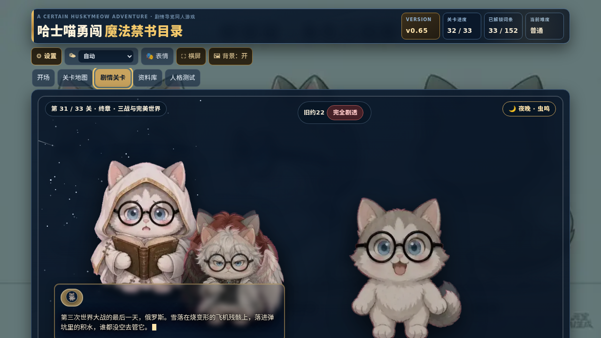
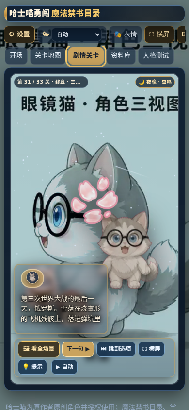
在线玩 bilibili.com/toy/beixue/index.html · 工程 github.com/604665656/beixue
《杯雪》同人互动游戏：二十四关 · 七卷 · 四模式 · 三档难度，单文件离线可玩。虽然名字带「游戏集」，平台侧仍是一个单 TOY，一个链接进去就是完整游戏。支持手机竖屏 / 横屏 / 桌面三种尺寸。
横屏 切换方向，★072 查看收集，设置 调整选项。PROC_ART 的 TDZ 报错已修。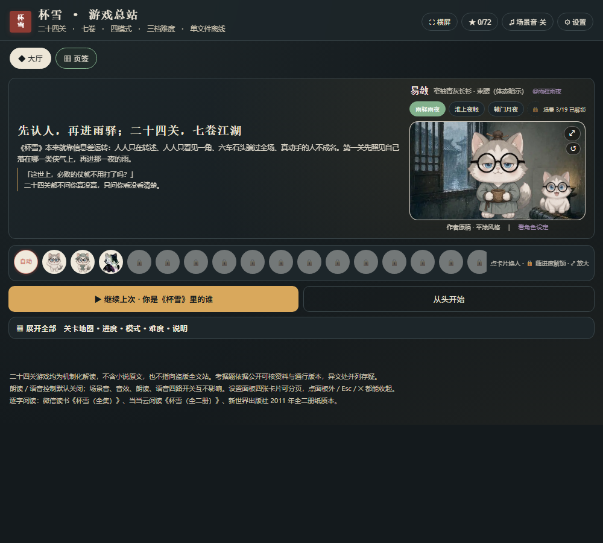
在线玩 bilibili.com/toy/wqn/index.html · 工程 github.com/604665656/wqn
一支人、一座城、某一个人，从公元前 5000 年一路点下去的分卷编年互动叙事。你不是在读一段写好的历史，而是顺着每次选择往下走；每 12 笔汇成一卷，卷卷可收。v4.2 规模：240 层 · 29 场景板 · 129 关。
dist/wqn.html 是主站，wqn-review.html 送审版，wqn-embed.html 内嵌版。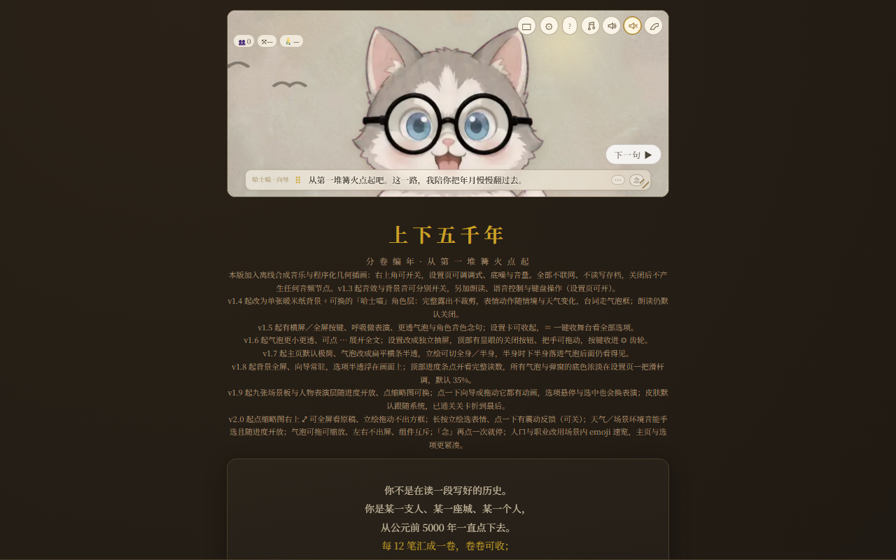
在线玩 bilibili.com/toy/n6ivNJRNYEx64flD/index.html · 工程 github.com/604665656/catkeys
单文件 Web 钢琴节奏跟弹游戏，主角是开源动效吉祥物哈士喵。65 首公有领域分级曲目，Lv.1~Lv.10 + 演奏级，跟弹打分给 ★，熟练度逐级解锁。带 10 项成就系统（初遇 / 全连 / 完美主义 / 百连 / 三星演奏家…），以及体力系统（上限 5 点、每 60 秒回 1 点、每日 20 局）。
自由弹 / 跟弹打分 / 🎯 演练 / 🐱 跳跃（哈士喵死亡跑酷）。消耗体力的只有「跟弹打分」和「跳跃」。📐 锁横屏或竖屏。C 大调音阶练习），调 速度 / 音量 / 音色，点右侧「开始练习」；音符落到判定线时按对应琴键。SCORE / COMBO / ACCURACY 与右上 PERFECT 实时更新。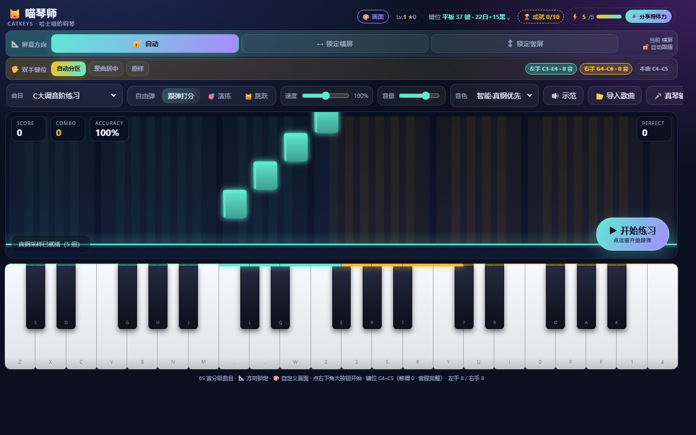
在线玩 bilibili.com/toy/yyjzshegdqcsy/index.html · 工程 github.com/604665656/qingcong-rhythm
不依赖框架、单文件的 4 轨下落式音游，示例曲《嘶恍而过的青葱岁月》。谱面由音频分析离线生成（STFT 谱通量检测音头），跟着真实音头走，不套固定 BPM 网格。三难度、准确率评级、本机最佳分，50 连击进 FEVER ×1.5。
D F J K 四轨，也支持方向键 / 触屏点按 / 手柄（A B X Y、十字键、左摇杆）。HOLD +150；中途松开只丢收尾奖励，不判 MISS、不断连。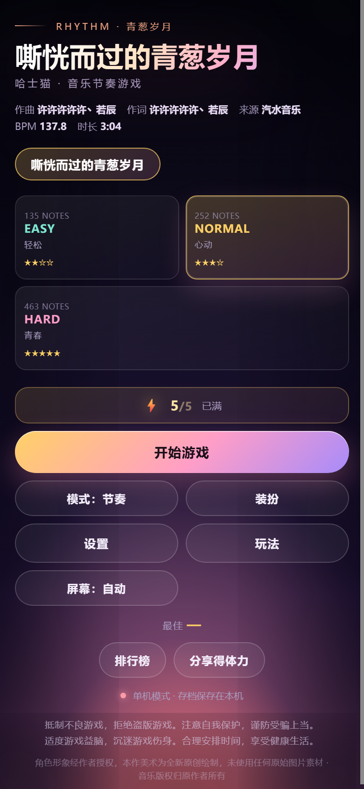
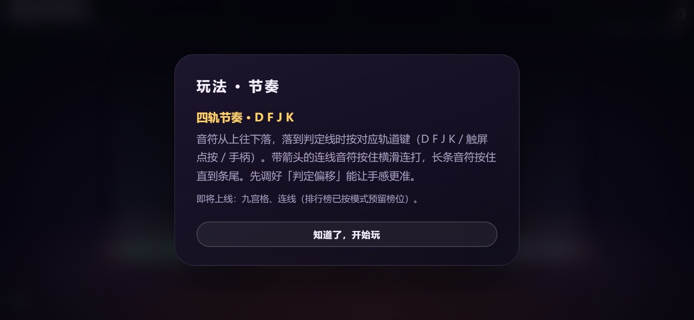
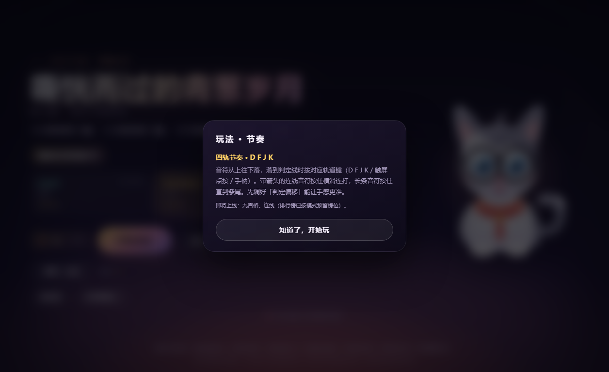
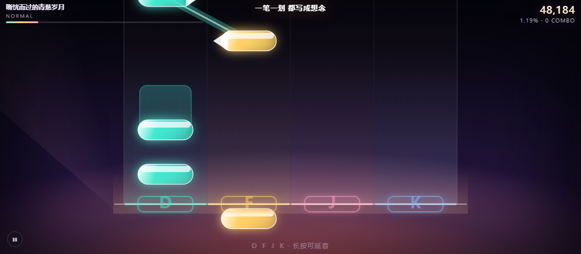
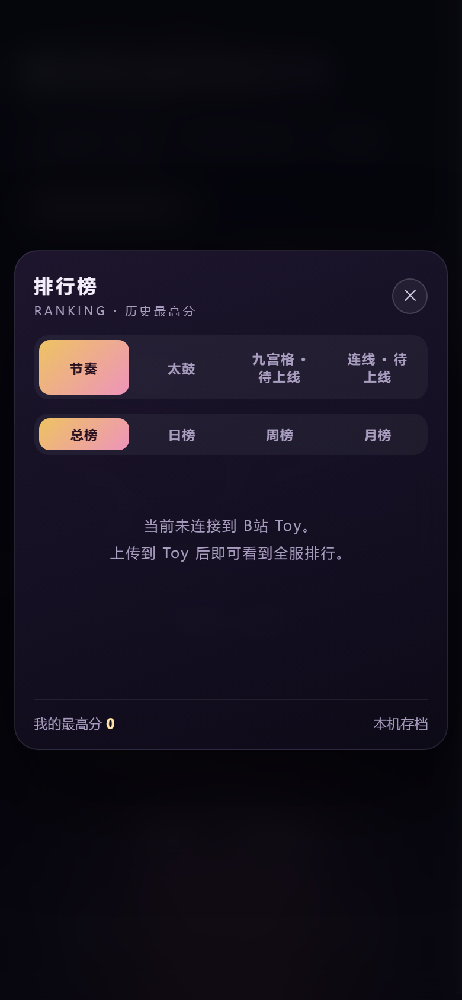
COLLECTION 类型的合集 Toy（0 个）。6 款都是打开链接就能玩，不用下载、不用装环境。最想验证：能否从开头一路玩到结尾、章节转场与结果揭晓是否连贯、刷新后「继续上次」还在不在、立绘 / CG 有无裁切错位或白屏、手机竖屏 / 平板横屏 / 电脑下的布局。
反馈直接在动态 / 专栏 / 文章评论区说即可，能带上「浏览器 + 设备 + 复现步骤」会快很多。提交 BUG 也可以用各仓库 Issues：604665656/hsm-toaru、604665656/hashimiao-quiz-avg、604665656/beixue、604665656/wqn、604665656/catkeys、604665656/qingcong-rhythm。点赞 / 评论 / 转发都会计入互动统计，哪个问题被顶得最多就先修哪个。